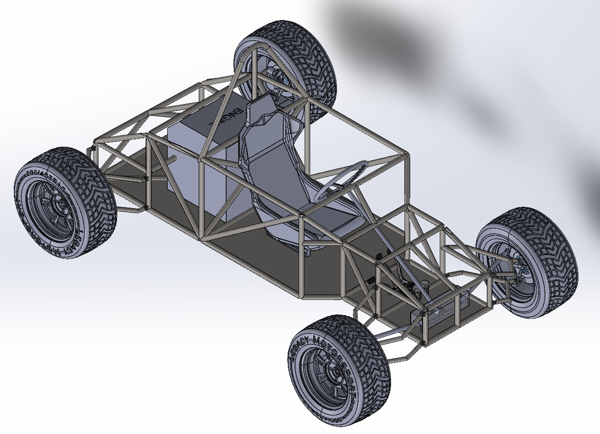
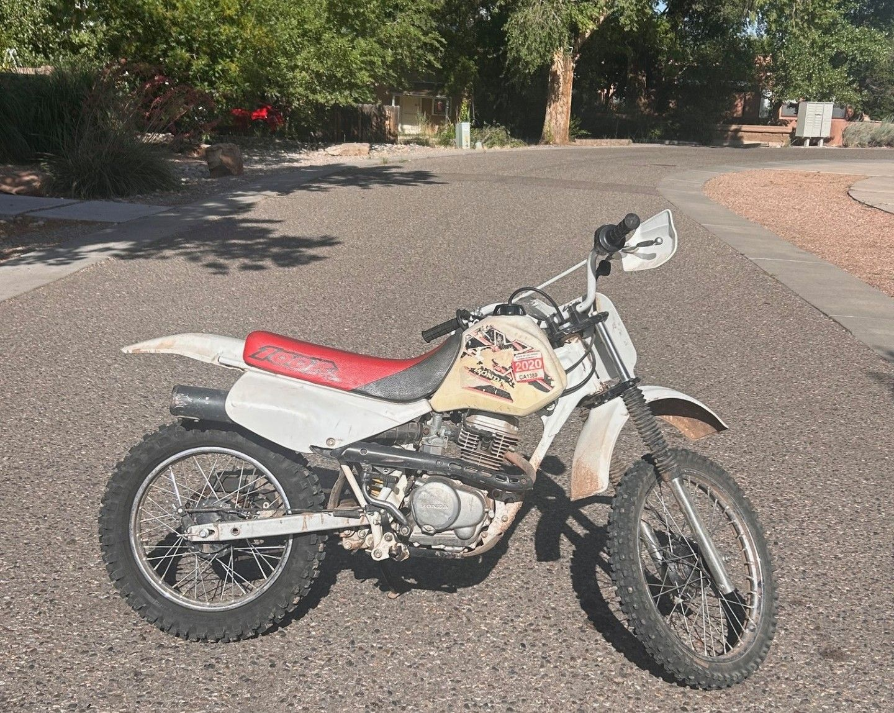

Personal projects
Projects I have worked on outside of class and work.
VW Bug Restoration
Since sophomore year of high school, I have bought three VW Bugs and worked to restore or rebuild them. The first needed a substantial amount of body and chassis work, which included replacing the floor pans, redoing the wiring, and repairing body panels.
I treated the second as a restoration project and bought the third to help convert the first Bug's chassis into a Baja car. Later, a cracked rod in the Baja's engine broke through the case, so I tore the engine down and rebuilt it using a different case.
Open-Wheel Off-Road Kart

After the Bug restoration and Baja projects, I wanted to try to design a full-size, open-wheel, off-road vehicle. The plan for this project was to use a CBR600 engine with drivetrain parts from a Mazda Miata to create an off-road-capable chassis. Unfortunately, I have not gotten to finish this project yet due to a lack of manufacturing tools and the projected cost. I plan to return to this project next summer.
Honda XR100R

After I got this bike, the engine would not idle and the carburetor had many issues. I was able to rebuild the carburetor and troubleshoot some of the other components to get it running well and consistently.
This project also enables me to work on machinery at a ranch in Colorado, fixing broken equipment such as their four-wheelers, pumps, and generators.
This Website
This website was built with HTML, CSS, and JavaScript in Visual Studio Code.